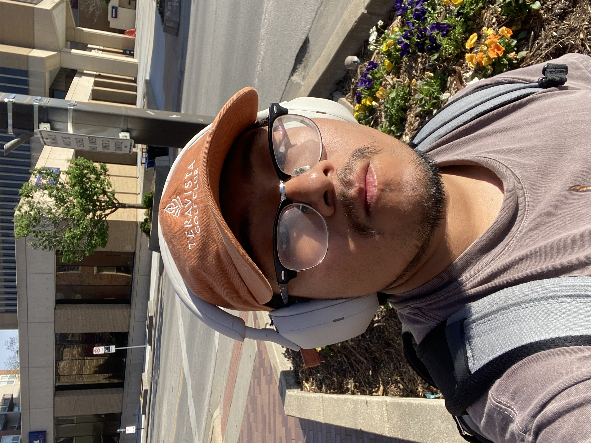

My background

Hello, My name is Luiz I was born in Emporia, KS.
I'm starting my chances towards breaking into tech because I've always desired a life with many opportunities and ways to grow, so tech seemed like the way to go as I've always been fascinated with technology.
The Beginning
In the beginning I never really had a interest in coding or computers, but it wasn't until later on when discovering the endless possibilities and opportunities tech can really give.
It felt challenging learning the basics and trying to truly understand how to become a programmer and not just memorizing the text but actaully being able to use the information hands on.
There's a certain video that inspired me even more to work hard and stick with tech.

Education
- Emporia High School(2018-2021).
- Springboard- Software engineering career track(2024).